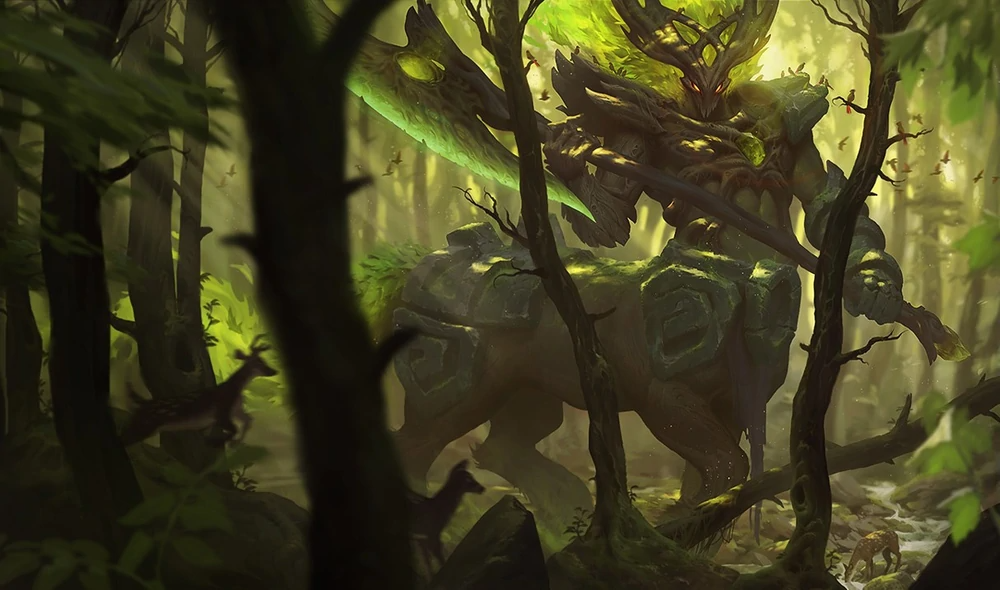
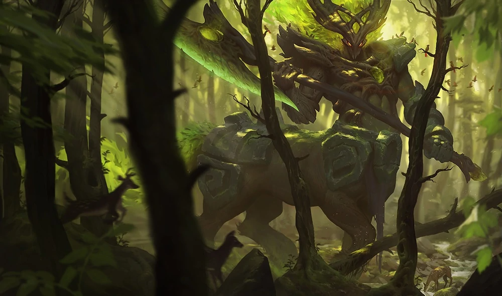
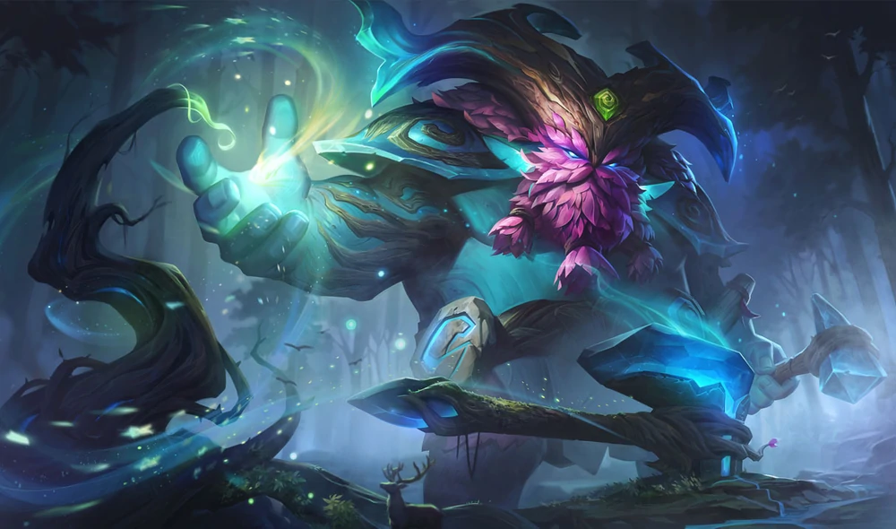
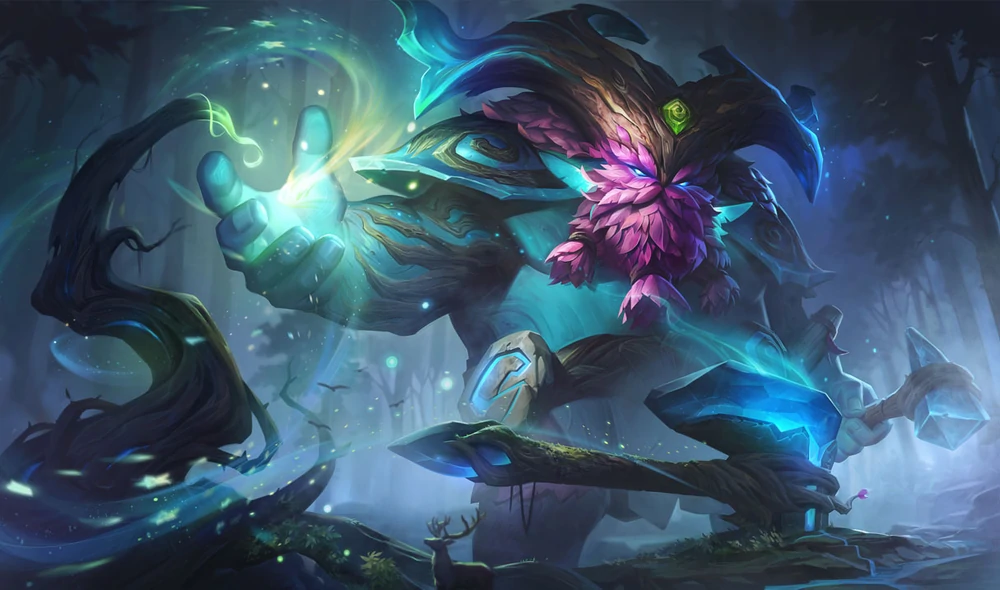

-
Event Horizon
Event Horizon is a mixed series of alternate future/universe skins in League of Legends. Set in the vastness of the cosmos, each of the champions represent cosmic ethereal beings able to bend and shape the universe with their will. Event Horizon officially encompasses two opposing skin lines: Cosmic and Dark Star.


Cosmic Flight Anivia
Owner of the mysterious six-million-point high score in the infamously difficult beat-em-up Demacia Vice, Ahri is a force of nature on the retro battlefields of cosmic World. Dashing between bosses before ripping them apart with her 8-bit magic, she's already earned the nickname “Queen of the cosmic.”Cosmic Queen Ashe
Benevolent ruler of the stars, Ashe fires her arrows across the endless darkness of space, creating new constellations wherever they fall. Her court drifts between galaxies, replenishing all the lights that have faded.
Cosmic Charger Hecarim
A knight in the Queen's court, he leads his calvary across the sky, forever expanding the outer edge of creation—bringing new life wherever his hooves fall.
Cosmic Invoker Illaoi
An entity who carries the raw power of cosmic creation in her hands, Illaoi can slam the orb she holds into the very fabric of reality, allowing time to flow forward even in places where life has been eradicated.Cosmic Reaver Kassadin
Born before the kindling of the stars, Kassadin stands alone in space's vast void. He watches over all things, a sentinel awaiting the end of this universe… and the beginning of the next.
Cosmic Enchantress Lulu
Tasked with charting the heavens, Lulu's whimsical splashes of magic dot the sky with newborn stars. She keeps meticulous records of their names, mourning each of them when they finally pass.Cosmic Lux
The right hand of Queen Ashe, Lux weaves celestial constellations, bringing order to a universe drifting towards entropy. When the Dark Star began corrupting members of the Cosmic Court, Lux stepped forward to confront Thresh. Yet she harbors a terrible secret—a shard of darkness that has always lived within her heart, whispering temptations…
Cosmic Blade Master Yi
Gliding effortlessly from star to star, Yi flashes through the night sky with celestial grace, his blade arcing with crystalline precision through the fabric of the universe itself.Cosmic Destiny Nami
The bringer of life, Nami is charged with scattering the seeds of 'Élan vital' on the newborn, cold lifeless rocks and planets that appear with the birth of new stars and constellations.
Cosmic Huntress Nidalee
A cosmic tracker and ferocious warrior, she is tasked to find newborn stars and defend them from the ever-hungry Dark Star corruptants. Darting from galaxy to galaxy in an eternal hunt, she is forever shifting her shape like the wandering stars in the sky.Cosmic Dawn Rakan
Dawn chases dusk beneath the sea, two lovers locked in an endless waltz across the stars. Thus Rakan is never far behind Xayah, his breaking light glowing always above her shadow.
Cosmic Sting Skarner
An ancient creature of deep, primal wisdoms from before the forming of the first galaxies, Skarner is composed of the very elements that are the building blocks of all the cosmos. His kind are the radiant antithesis of the ancient, squirming things that lurk in the deep darkness of space, and beyond it.Cosmic Hunter Varus
A young member of the cosmic court, minted in the image of the Dark Star corruptant Varus. Tasked with destroying his monstrous doppelganger, this new Varus seeks his place among the stars after his task is finally complete.
Cosmic Devourer Vladimir
Pompous, arrogant, and isolated from his cosmic brethren, Vladimir drinks the essence from dead worlds to infuse dying ones with life. Yet as of late his hunger has begun to grow…Cosmic Dusk Xayah
Dusk beckons the dawn to its embrace, two lovers locked in an endless waltz across the stars. Thus Xayah is always a step ahead of Rakan, leading him forever into her arms.
Cosmic Defender Xin Zhao
Great horrors are attracted to the light of newborn stars—from the corruptants of the Dark Star, to squirming, ancient things yet unknown. Xin Zhao is the steadfast protector of these cosmic cradles, driving off any that would devour them.

 
 



Elderwood Ahri
Fables of the trickster spirit Ahri have been part of mankind's history for countless generations. Fair-skinned and eternally youthful, she is portrayed as a curious, quizzical member of the Elderwood's feyfolk… though in recent years her heart has hardened, as she fights a growing corruption within her ancestral home.
Elderwood Azir
An ancient druid-king of the Elderwood, who has called the forest his home since it stood nameless in the shadow of the gods. Though his people are a dying breed, he has raised an ensorcelled army in their likeness, including the shell of a human king whose story rings all too familiar...
Elderwood Bard
Bard is a creature of the old world, they say, older than the great forest, and older even than the seeds it sprouted from. Few records remain of the age before the gods, but it is likely Bard predates them - a truly primordial being, tending the land since time's first dawn.Elderwood Hecarim
His is armor of soft-spun summerwood and rowan—the stones upon him carved in a time before the old gods danced among the trees. Even now, Hecarim travels the shallow rivers and moss-flecked paths of the Elderwood, that ageless guardian who protects the forest from mankind's darkest yearnings.
Elderwood Leblanc
When the Coven first rose to power, they craved the living enchantments of the Elderwood - a tool, they believed, for the resurrection of their dark patrons. Thus did they fall upon the great forest, and slaughter its children… until a lone sylvan stood against them, stealing the witches' lives, their magic, and even their names.Elderwood Ornn
A truly ancient shaper of the Elderwood, and keeper of divine knowledge. Beings who tended the trees and directed the rivers are rare in this time of fell magic and endless twilight, yet Ornn continues on, stubbornly clinging to what remains of the old way.
Elderwood Rakan
Deep in the shaded canopies of the Elderwood, the Fey Prince Rakan and Princess Xayah hold court over two rival fairy dominions. Star-crossed lovers uninterested in the affairs of mortals, their playful romance has insulated their people from the horrors befalling the outside world.
Dryad Soraka
Too many forget that the heart of the Elderwood was once gentle and kind. Within its confines rested fae, sylvans, and dryads - creatures from another age, who looked upon humanity with curious eyes. Now only a scattered few remain, and fewer still, like Soraka, who regard humans fondly.
Elderwood Veigar
A small number of the Elderwood's children remain largely unaffected by the growing influence of the Coven, to the relief of scholars and storytellers alike. Unfortunately, those particular children are some of the most whimsical and dangerous, including among their number the insane goblin Veigar and his cursed, hallucinogenic toadstools.
Elderwood Xayah
Deep in the shaded canopies of the Elderwood, the Fey Prince Rakan and Princess Xayah hold court over two rival fairy dominions. Though Princess Xayah has seen the darkness of the world beyond, she has chosen to simply adopt its colors for her court rather than confront it.
Elderwood Ivern
A nightmarish totem forged of witchcraft and forbidden incantations, Ivern stood among the Old Gods in the days before their destruction. Left inert for hundreds of years, he has risen along with his brethren to annihilate the paltry works of man.
Elderwood Nocturne
The great corpses of the Old Gods fed the land, and in time even the Elderwood would come to grow over their putrid rot - hiding it, perhaps, for a time. But the Gods never truly died and, with the resurgence of the Coven, one has risen again–Nocturne, the Eternal Nightmare. -